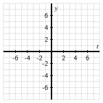

Subsection 3.4.1 Introduction
In
Section 1.7, we introduced the idea of an inverse function. The fundamental idea is that
\(f\) has an inverse function if and only if there exists another function
\(g\) such that
\(f\) and
\(g\) “undo” one another’s respective processes. In other words, the process of the function
\(f\) is reversible, and reversing
\(f\) generates a related function
\(g\text{.}\)
More formally, recall that a function
\(y = f(x)\) (where
\(f : A \to B\)) has an inverse function if and only if there exists another function
\(g : B \to A\) such that
\(g(f(x)) = x\) for every
\(x\) in
\(A\text{,}\) and
\(f(g(y)) = y\) for every
\(y\) in
\(B\text{.}\) We know that given a function
\(f\text{,}\) we can use the
Horizontal Line Test to determine whether or not
\(f\) has an inverse function. Finally, whenever a function
\(f\) has an inverse function, we call its inverse function
\(f^{-1}\) and know that the two equations
\(y = f(x)\) and
\(x = f^{-1}(y)\) say the same thing from different perspectives.
Preview Activity 3.4.1.
Subsection 3.4.2 The base-\(10\) logarithm
The powers-of-
\(10\) function
\(P(t) = 10^t\) is an exponential function with base
\(b \gt 1\text{.}\) As such,
\(P\) is always increasing, and thus its graph passes the
Horizontal Line Test, so
\(P\) has an inverse function. We therefore know there exists some other function,
\(L\text{,}\) such that writing
\(y = P(t)\) is equivalent to writing
\(t = L(y)\text{.}\) For instance, we know that
\(P(2)=100\) and
\(P(-3)=\frac{1}{1000}\text{,}\) so it’s equivalent to say that
\(L(100) = 2\) and
\(L(\frac{1}{1000}) = -3\text{.}\) This new function
\(L\) we call the
base \(10\) logarithm, which is formally defined as follows.
Definition 3.4.1.
Given a positive real number
\(y\text{,}\) the
base-\(10\) logarithm of \(y\) is the power to which we raise
\(10\) to get
\(y\text{.}\) We use the notation “
\(\log_{10}(y)\)” to denote the base-
\(10\) logarithm of
\(y\text{.}\)
The base-
\(10\) logarithm is therefore the inverse of the powers of
\(10\) function. Whereas
\(P(t) = 10^t\) takes an input whose value is an exponent and produces the result of taking
\(10\) to that power, the base-
\(10\) logarithm takes an input number we view as a power of
\(10\) and produces the corresponding exponent such that
\(10\) to that exponent is the input number.
In the notation of logarithms, we can now update our earlier observations with the functions \(P\) and \(L\) and see how exponential equations can be written in two equivalent ways. For instance,
\begin{equation}
10^2 = 100 \text{ and } \log_{10}(100) = 2\tag{3.4.1}
\end{equation}
each say the same thing from two different perspectives. The first says “\(100\) is \(10\) to the power \(2\)”, while the second says “\(2\) is the power to which we raise \(10\) to get \(100\)”. Similarly,
\begin{equation}
10^{-3} = \frac{1}{1000} \text{ and } \log_{10} \left( \frac{1}{1000} \right) = -3\text{.}\tag{3.4.2}
\end{equation}
If we rearrange the statements of the facts in
Equation (3.4.1), we can see yet another important relationship between the powers of
\(10\) and base-
\(10\) logarithm function. Noting that
\(\log_{10}(100) = 2\) and
\(100 = 10^2\) are equivalent statements, and substituting the latter equation into the former, we see that
\begin{equation}
\log_{10}(10^2) = 2\text{.}\tag{3.4.3}
\end{equation}
In words,
Equation (3.4.3) says that “the power to which we raise
\(10\) to get
\(10^2\text{,}\) is
\(2\)”. That is, the base-
\(10\) logarithm function undoes the work of the powers of
\(10\) function.
In a similar way, if we rearrange the statements in
Equation (3.4.2), we can observe that by replacing
\(-3\) with
\(\log_{10}(\frac{1}{1000})\) we have
\begin{equation}
10^{\log_{10}(\frac{1}{1000})} = \frac{1}{1000}\text{.}\tag{3.4.4}
\end{equation}
In words,
Equation (3.4.4) says that “when
\(10\) is raised to the power to which we raise
\(10\) in order to get
\(\frac{1}{1000}\text{,}\) we get
\(\frac{1}{1000}\)”.
We summarize the key relationships between the powers-of-
\(10\) function and its inverse, the base-
\(10\) logarithm function, more generally as follows.
\(P(t) = 10^t\) and \(L(y) = \log_{10}(y)\).
-
The domain of
\(P\) is the set of all real numbers and the range of
\(P\) is the set of all positive real numbers.
-
The domain of
\(L\) is the set of all positive real numbers and the range of
\(L\) is the set of all real numbers.
-
For any real number
\(t\text{,}\) \(\log_{10}(10^t) = t\text{.}\) That is,
\(L(P(t)) = t\text{.}\)
-
For any positive real number
\(y\text{,}\) \(10^{\log_{10}(y)} = y\text{.}\) That is,
\(P(L(y)) = y\text{.}\)
-
\(10^0 = 1\) and
\(\log_{10}(1) = 0\text{.}\)
The base-
\(10\) logarithm function is like the sine or cosine function in this way: for certain special values, it’s easy to know the value of the logarithm function. While for sine and cosine the familiar points come from specially placed points on the unit circle, for the base-
\(10\) logarithm function, the familiar points come from powers of
\(10\text{.}\) In addition, like sine and cosine, for all other input values, (a) calculus ultimately determines the value of the base-
\(10\) logarithm function at other values, and (b) we use computational technology in order to compute these values. For most computational devices, the command
log(y) produces the result of the base-
\(10\) logarithm of
\(y\text{.}\)
It’s important to note that the logarithm function produces exact values. For instance, if we want to solve the equation
\(10^t = 5\text{,}\) then it follows that
\(t = \log_{10}(5)\) is the exact solution to the equation. Like
\(\sqrt{2}\) or
\(\cos(1)\text{,}\) \(\log_{10}(5)\) is a number that is an exact value. A computational device can give us a decimal approximation, and we normally want to distinguish between the exact value and the approximate one. For the three different numbers here,
\(\sqrt{2} \approx 1.414\text{,}\) \(\cos(1) \approx 0.540\text{,}\) and
\(\log_{10}(5) \approx 0.699\text{.}\)
Activity 3.4.2.
For each of the following equations, determine the exact value of the unknown variable. If the exact value involves a logarithm, use a computational device to also report an approximate value. For instance, if the exact value is
\(y = \log_{10}(2)\text{,}\) you can also note that
\(y \approx 0.301\text{.}\)
(a)
(b)
\(\log_{10}(1000000) = t\)
(c)
(d)
(e)
(f)
\(3 \cdot 10^t + 11 = 147\)
(g)
\(2\log_{10}(y) + 5 = 1\)
Subsection 3.4.3 The natural logarithm
The base-
\(10\) logarithm is a good starting point for understanding how logarithmic functions work because powers of
\(10\) are easy to mentally compute. We could similarly consider the powers of
\(2\) or powers of
\(3\) function and develop a corresponding logarithm of base
\(2\) or
\(3\text{.}\) But rather than have a whole collection of different logarithm functions, in the same way that we now use the function
\(e^t\) and appropriate scaling to represent any exponential function, we develop a single logarithm function that we can use to represent any other logarithmic function through scaling. In correspondence with the natural exponential function,
\(e^t\text{,}\) we now develop its inverse function, and call this inverse function the
natural logarithm.
Definition 3.4.2.
Given a positive real number
\(y\text{,}\) the
natural logarithm of \(y\) is the power to which we raise
\(e\) to get
\(y\text{.}\) We use the notation “
\(\ln(y)\)” to denote the natural logarithm of
\(y\text{.}\)
We can think of the natural logarithm, \(\ln(y)\text{,}\) as the “base-\(e\) logarithm”. For instance,
\begin{equation*}
\ln(e^{-1}) = -1
\end{equation*}
and
\begin{equation*}
e^{\ln(2)} = 2\text{.}
\end{equation*}
The former equation is true since “the power to which we raise
\(e\) to get
\(e^{-1}\) is
\(-1\)”; the latter equation is true since “when we raise
\(e\) to the power to which we raise
\(e\) to get
\(2\text{,}\) we get
\(2\)”. The key relationships between the natural exponential and the natural logarithm function are investigated in
Activity 3.4.3.
Activity 3.4.3.
Let
\(E(t) = e^t\) and
\(N(y) = \ln(y)\) be the natural exponential function and the natural logarithm function, respectively.
(a)
What are the domain and range of
\(E\text{?}\)
(b)
What are the domain and range of
\(N\text{?}\)
(c)
What can you say about
\(\ln(e^t)\) for every real number
\(t\text{?}\)
(d)
What can you say about
\(e^{\ln(y)}\) for every positive real number
\(y\text{?}\)
(e)
Complete the following tables with both exact and approximate values of
\(E\) and
\(N\text{.}\) Then, plot the corresponding ordered pairs from each table on the axes provided and connect the points in an intuitive way. When you plot the ordered pairs on the axes, in both cases view the first line of the table as generating values on the horizontal axis and the second line of the table as producing values on the vertical axis. Note that when we take this perspective for plotting the data in the table for
\(N\text{,}\) we are viewing
\(N\) as a function of
\(t\text{,}\) writing
\(N(t) = \ln(t)\) in order to plot the function on the
\(t\)-
\(y\) axes; label each ordered pair you plot appropriately.
| \(t\) |
\(-2\) |
\(-1\) |
\(0\) |
\(1\) |
\(2\) |
| \(E(t)=e^t\) |
\(e^{-2} \approx 0.135\) |
|
|
|
|
| \(y\) |
\(e^{-2}\) |
\(e^{-1}\) |
\(1\) |
\(e^1\) |
\(e^2\) |
| \(N(y)=\ln(y)\) |
\(-2\) |
|
|
|
|

ADD ALT TEXT TO THIS IMAGE